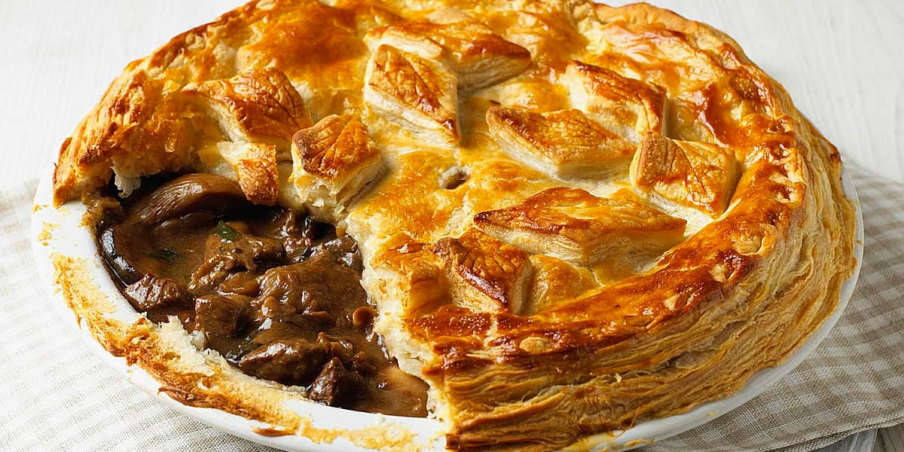

Steak & Ale Pie
Recipe Specification
Ingredients List
| Ingredients | Quantity |
|---|---|
| Beef Chuck | 600g |
| Dark Ale | 500ml |
| Plain Flour | 40g |
| Table Salt | 1 tsp |
| Cracked Black Pepper | ½ tsp |
| Dried Thyme | 1 tsp |
| White Onion | 2x1 |
| Leeks | 2x1 |
| Carrot | 2x1 |
| Beef Stock | 250ml |
| Vegetable Oil | 20ml |
| Garlic Cloves | 3 Cloves |
| Puff Pastry | 1x320g |
| Medium Egg | 1x1 |
Yield: 6-8 portions
Preparation
- Marinade beef chuck in ale overnight.
- Cut beef chuck into 1 inch cubes and save ale for later.
- Peel and finely dice white onion.
- Peel and finely dice carrots.
- Wash and finely dice leeks.
- Peel and crush garlic cloves.
- Toss chuck chunks in flour, salt and pepper.
- Pre-heat oven to 180’C.
Cooking Instructions
- Put a medium sized cast iron pot on a medium/high heat and add 30ml of vegetable oil.
- Brown chuck pieces in batches before removing from pot to a bowl.
- Add diced onion, carrots, leeks and mustard to pot before sautéing for 2-3 minutes.
- Remove vegetable from pot and add to meat.
- Return pot to heat and add half the ale before deglazing pot.
- Return meat and vegetables to the pot before adding the beef stock and remaining ale.
- Bring to the boil and reduce to the simmer for 40-45 minutes.
- Season to taste and transfer to a ceramic baking dish.
- Apply puff pastry sheet to the top of the beef and ale filling before pressing into corners and crimping edges. Create a few holes in the top of the puff pastry and finish by brushing with egg wash.
- Place pie in the oven for 40 minutes until puff pastry is golden brown.

Serving Suggestions
Steak & Ale pie go great with creamy mash potatoes and buttered carrots.
Storing instructions
Allow to cool to room temperature, clingfilm and place in the fridge. Consume with 4-5 days of making.
Reheating Instructions
Place in microwave for 2-3 minutes.